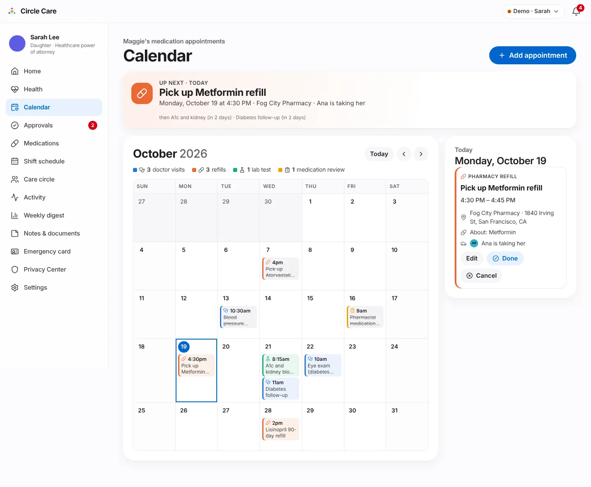
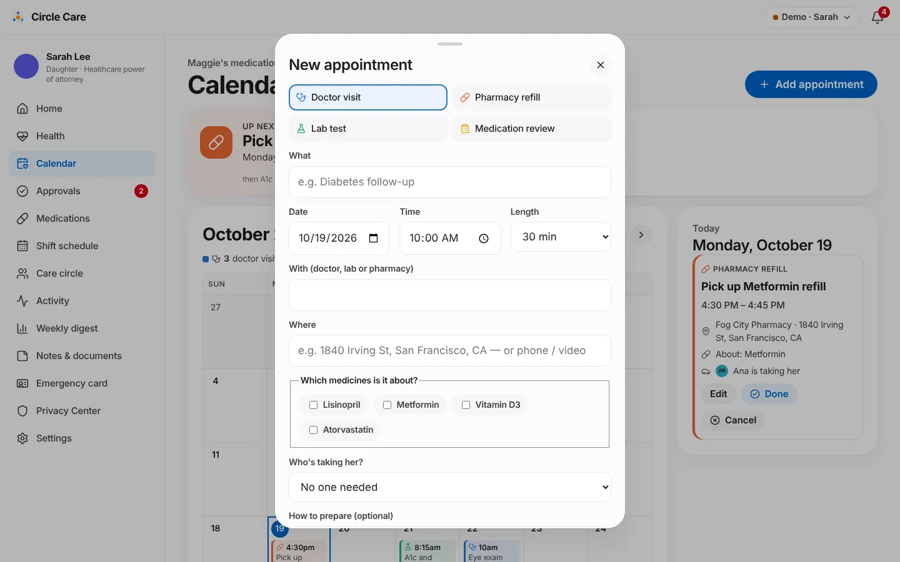
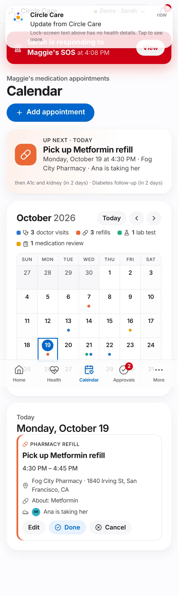

Care calendar¶
Overview¶
What. A full-month calendar of appointments that relate to Maggie's medicines: doctor visits, pharmacy refills, lab tests and medication reviews. Each appointment records who it is with, where, which medicines it concerns, who is taking Maggie, and how to prepare. An Up next banner keeps the next few appointments in view.
Why. Medication safety depends on more than doses: refills must be picked up, fasting lab tests must be prepared for, and follow-ups must have someone to drive. These usually live in one person's head or phone.
Business value. Reduces missed refills and appointments, and links each appointment to the medicines it concerns — the foundation for Release 2 patient-portal appointment sync and pharmacy refill integration.
User journey¶
- Sarah opens Calendar — "Maggie's medication appointments".
- The Up next banner shows the next appointment in its type colour: "UP NEXT · TODAY — Pick up Metformin refill — Monday, October 19 at 4:30 PM · Fog City Pharmacy · Ana is taking her" and the following two ("then A1c and kidney (in 2 days) · Diabetes follow-up (in 2 days)"). Tapping it jumps to that day.
- The month grid (October 2026) has Today, previous and next buttons and a legend counting this month's appointments by type (3 doctor visits · 3 refills · 1 lab test · 1 medication review). Each day shows up to three chips (icon, time, title) and +N more; past appointments are struck through.
- Selecting a day fills the day panel: type, title, time range, provider and location, About: Metformin, Ana is taking her, preparation notes, and Edit, Done (today or earlier) and Cancel.
- Add appointment (or Add one on an empty day) opens New appointment: type buttons (Doctor visit, Pharmacy refill, Lab test, Medication review), What, Date, Time, Length, With (doctor, lab or pharmacy), Where, Which medicines is it about?, Who's taking her? and How to prepare (optional) → Add to calendar — "Appointment added — Maggie will see it".
- On phones the grid switches to a compact view with coloured dots per day.



Functional details & business rules¶
Appointment types¶
Type (kind) |
Label | Colour | Icon | Default length (seed) |
|---|---|---|---|---|
doctor |
Doctor visit | Blue #2a78d6 |
Stethoscope | 45 min |
refill |
Pharmacy refill | Orange #eb6834 |
Pill | 15 min |
lab |
Lab test | Green #1baf7a |
Flask | 20 min |
review |
Medication review | Amber #eda100 |
Clipboard | 45 min |
Every chip and legend entry pairs colour with an icon and text.
Rules¶
| Rule | Value |
|---|---|
| Required fields | What, Date, Time, With |
| Length options | 15, 30, 45, 60, 90 minutes |
| Escort options | Any active member except the elder, or No one needed |
| Status | scheduled → done (only on or after the appointment date) or cancelled |
| Up next | First scheduled appointment that hasn't ended yet; the banner also names the next two |
| Day chips | Up to 3 per day, then +N more; cancelled appointments are hidden from the grid but kept in the day panel with a Cancelled badge |
| Seed data | 14 appointments from 12 days ago to 35 days ahead, including two on the same day (lab test 08:15 and diabetes follow-up 11:00, in 2 days) and the eye exam on the next Thursday that matches a care note |
Demo providers (fictional, San Francisco)¶
| Provider | Location |
|---|---|
| Dr. Hannah Brooks | Golden Gate Family Medicine, 2100 Webster St |
| Dr. Omar Patel | Presidio Eye Care, 3700 California St |
| Dr. Lena Ortiz | Bay Heart Center, 1100 Van Ness Ave |
| Bay Area Lab | Suite 210, 3801 Sacramento St |
| Fog City Pharmacy | 1840 Irving St (or mail order / phone) |
Permissions & privacy¶
| Resource | Read | Write |
|---|---|---|
appointments |
elder, guardian, family, pro (on or off shift) | guardian only |
The Add appointment, Edit, Done and Cancel controls are hidden for anyone without appointments: write. Opening the calendar writes "viewed the appointment calendar" to the access log; changes write created / updated entries with the appointment title.
Notifications¶
| Trigger | Recipient | Lock-screen text | In-app detail |
|---|---|---|---|
| New appointment | Elder | Update from Circle Care | New appointment: Blood pressure recheck on 2026-10-21 at 10:00 AM. |
| New appointment with a professional caregiver as escort | Caregiver | You have an update in Circle Care | Sarah asked you to take Maggie to "Blood pressure recheck" on 2026-10-21 at 10:00 AM. |
Family escorts are not notified (the demo has no family app). The elder alert is also sent when an existing appointment is edited.
Accessibility¶
- The month grid uses
role="grid",row,columnheaderandgridcell; each day cell has a full label, e.g. "Wednesday, October 21, 2 appointments: Lab test 8:15 AM, Doctor visit 11:00 AM". - The selected day is announced through an
aria-livepanel. - Appointment types are a labelled radio group; medicines are checkboxes.
/app/guardian/calendarpasses axe-core.
Data captured¶
| Field | Type |
|---|---|
date, time, durationMin |
YYYY-MM-DD, HH:MM, minutes |
kind |
doctor · lab · refill · review |
title, provider, location, prep? |
text |
medIds[] |
medicines the appointment is about |
escortId? |
member taking Maggie |
status |
scheduled · done · cancelled |
createdBy |
member id |
Edge cases & error states¶
| Situation | Behaviour |
|---|---|
| Day with no appointments | "No appointments." with Add one (guardian) |
| Clicking a day in the previous or next month | Selects it and switches month |
| More than three appointments in a day | +N more chip |
| Appointment for a paused medicine | Allowed; the medicine name still shows |
Test coverage¶
| Type | Test |
|---|---|
| E2E | CC-94/96/97 month calendar: next-up, navigation, add and cancel — checks Up next, that the grid has 7 cells per row, next-month and Today navigation, adding Blood pressure recheck for Lisinopril, and cancelling it |
| Unit | health.test.ts — everyone in the circle can see appointments; only the guardian edits them · seeds medication appointments including two on one day |
| Accessibility | /app/guardian/calendar |
Known limitations & production gaps¶
| In the prototype | In production (planned) |
|---|---|
| The elder and caregiver apps have no calendar screen; they receive a notification only (the form says "Maggie sees every appointment in her app") | Elder and caregiver views of upcoming appointments |
| Appointments entered by hand | Patient-portal appointment sync and pharmacy refill integration (R2) |
| No reminders before appointments or preparation steps | Reminders the day before and on the day; fasting reminders |
| No ride booking | Ride booking for appointments (R4) |
| No recurring appointments | Recurrence (e.g. 90-day refills) |
Dates shown as YYYY-MM-DD in notification text |
Localised dates |
Related pages¶
- Medications & tasks
- Guardian dashboard & approvals — Next appointment tile
- Roadmap